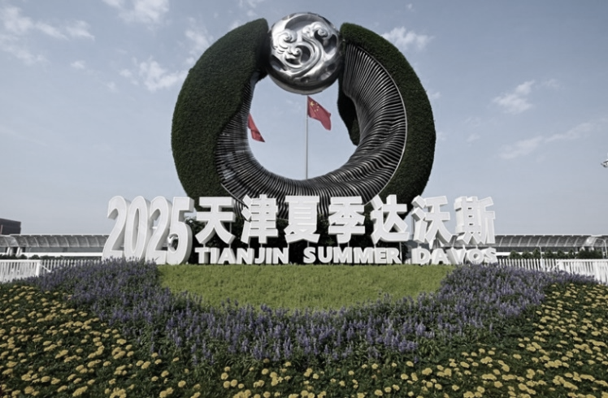
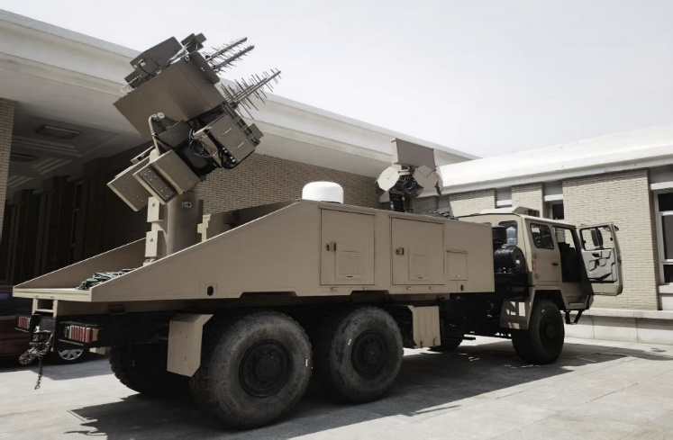
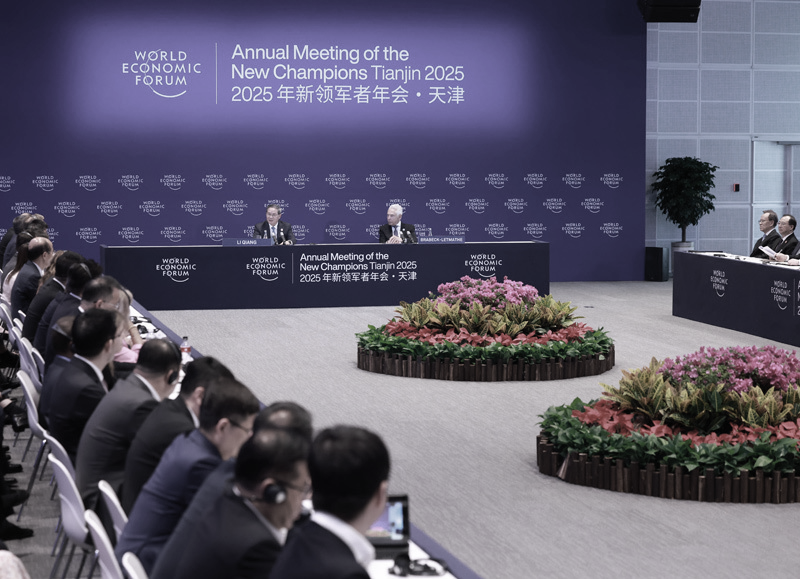
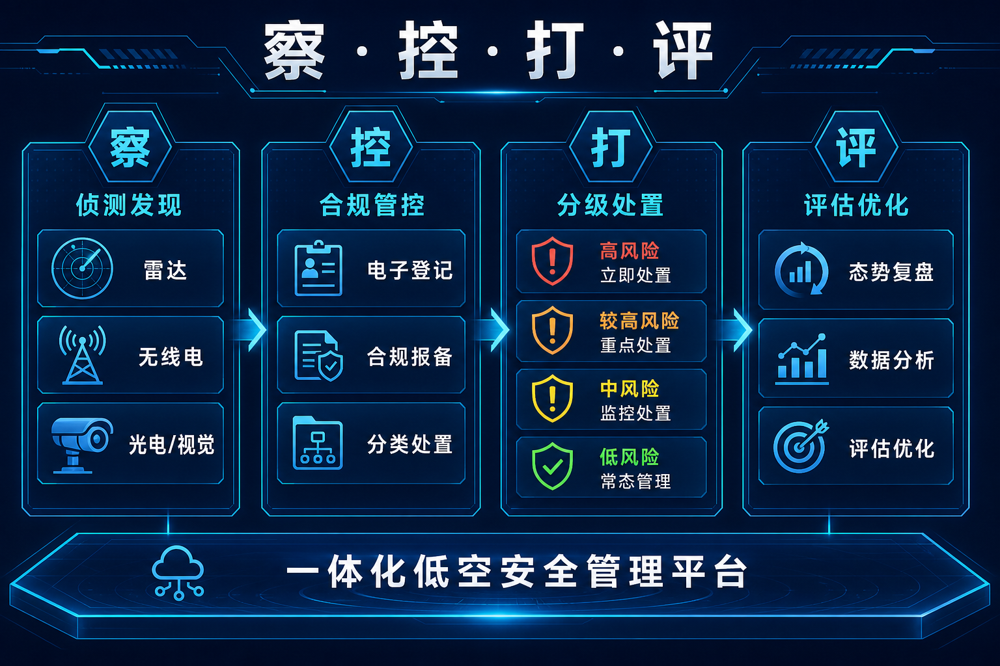

导读 本文面向公安及重大活动安保管理部门，以2025年夏季达沃斯论坛低空安保为样本，复盘国家级国际盛会场景下，核心要地防护如何把「看见—定级—处置—复盘」跑成闭环。
导语：国际盛会，低空容错率趋近于零
夏季达沃斯论坛是面向全球的新领军者年会。会场内外同时汇聚政商代表与媒体关注，空域敏感度远高于一般城市活动。
要不要守核心要地？能不能做到全时不间断？发现误闯之后，能不能管得住又不伤及周边通信？
2025年天津夏季达沃斯论坛给出的答案，不是临时加几台设备，而是把车载反无人机系统按「察·控·打·评」一体化拉到现场，按全域、全时、全方位标准，为论坛活动与核心要地提供低空安全屏障，并承担中央主要领导驻地防护任务。

2025 天津夏季达沃斯 · 外景（公开材料）
一 场景挑战：为什么这是「国家级」考题？
国家级国际盛会的低空安保，难在标准更高、目标更要害、容错更低。
• 第一，活动规格高。世界经济论坛新领军者年会面向全球开放，任何低空异常都可能被放大解读，必须前置感知、快速闭环。
• 第二，防护对象重。除主会场外，核心要地与领导驻地同属高敏感目标，要求覆盖连续、值守不间断，而不是「活动开始才开机」。
• 第三，处置约束严。既要有效处置误闯，又要避免对周边民用通信造成次生影响，强度必须可控、审慎。
因此，达沃斯现场的关键不是「有没有设备」，而是：有没有一套经得起国家级标准检验的一体化能力。
国家级活动的低空治理，拼的是零闪失，而不是临时勇气。
二 能力轴：车载一体化，按「全域·全时·全方位」展开
达沃斯案例的看点，首先是能力形态——车载反无人机系统。
车载平台便于按活动节奏机动到位，把探测、研判、处置与指挥协同能力前推到核心区域。相比单纯依赖远端固定站，现场能够更直接地承接要地值守与突发处置。

车载反无人机系统部署（公开材料）
「全域」强调覆盖面：主会场、核心要地、驻地周边等关键空域纳入同一套态势视野。
「全时」强调连续性：论坛期间保持不间断感知与值守，而不是间歇抽查。
「全方位」强调手段配套：看见、看懂、管住、留痕，形成完整链条。
对核心要地来说，车载一体化的价值，是把最高标准落到可展开、可协同的现场能力上。
三 察与控：多源融合，先把威胁看准
闭环仍从「察」开始。现场融合无线电、雷达、光电等多源探测，把进入关注范围的低空目标及时发现出来，降低单一手段漏检风险。

世界经济论坛新领军者年会 · 天津现场（公开材料）
「控」则要把目标变成可决策信息。国际盛会期间，合法航拍、媒体跟拍与未报备误闯可能并存，必须结合区域敏感度、飞行行为与报备情况辅助定级，避免「一刀切」过度处置，也避免该管的没管住。
察解决「漏不漏」，控解决「准不准」。两者合在一起，才谈得上后面的精准管控。
核心要地低空管控，关键是持续看见，并准确判断该不该动、动到什么程度。
四 打与评：审慎处置，通信友好，全程留痕
对进入处置阈值的目标，现场以干扰压制、导航诱骗等软处置手段为主，目标是精准管控与高效处置：管住风险，同时尽量减小对周边环境的连带影响。
公开复盘口径显示：任务期间有效处置多次无人机误闯事件，未对周边民用通信造成影响。对国家级活动而言，这比单纯「打下来」更重要——处置有效，且代价可控。
「评」要求过程可回看。何时发现、如何定级、如何处置、结果如何，能够留痕归档，为后续同等规格任务沉淀预案。

行业里把这条链概括成「察 · 控 · 打 · 评」。羽嘉科技「猎场一号」警用低空防务智能实战平台，正是把上述闭环做成可调度的业务系统：兼容主流侦测反制设备，按实战流程支撑重大活动与核心要地场景。
真正配得上国家级任务的，是既管得住威胁、又守得住边界的闭环能力。
结 高规格活动，检验的是体系可信度
2025夏季达沃斯论坛给出的启示很清楚。
• 第一，国际盛会与核心要地防护，标准必须按「全域、全时、全方位」来设，不能按普通城市活动降配。
• 第二，车载一体化适合把能力推到要害目标附近，缩短发现到处置的路径。
• 第三，能完成此类任务，本身是对技术可靠性与协同能力的高强度验证——最高规格的安保体系，只会把要害目标交给经得起检验的装备与流程。
从文化节、博览会到达沃斯级别国际会议，场景不同，底层逻辑一致：看得见、定得准、处置可控、过程可评。城市常态靠网络，国家级活动靠体系。体系过硬，低空屏障才立得住。
—— 关于我们 ——
羽嘉科技，城市级低空安全解决方案提供商，
「猎场一号」警用低空防务智能实战平台研发者。
让低空管理从「被动应对」转向「主动防控」。
免责声明：本文相关信息引自公开交流材料与行业实践复盘，仅供交流参考，不涉及客户内部流程、部署点位与设备数量，不构成任何决策依据。如有侵权请联系删除。
使用说明：浏览器打开可预览。发公众号时按「配图/配图清单.md」上传 00–04（仅达沃斯材料）。